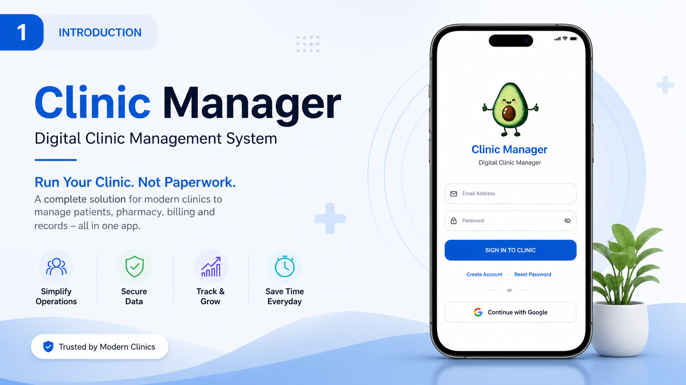
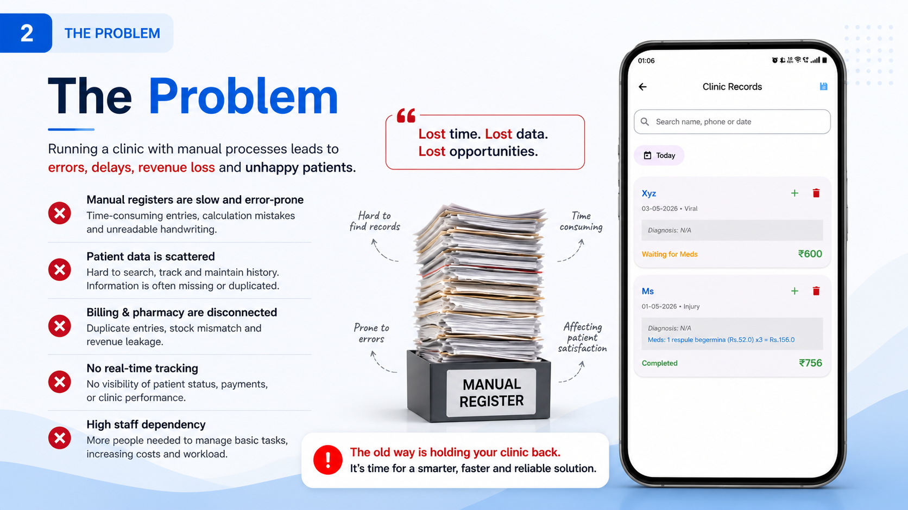
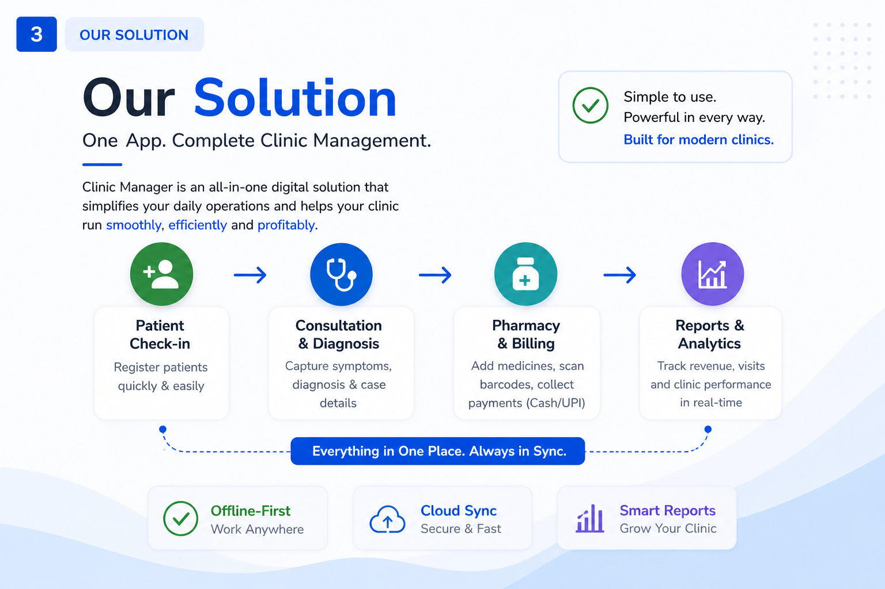
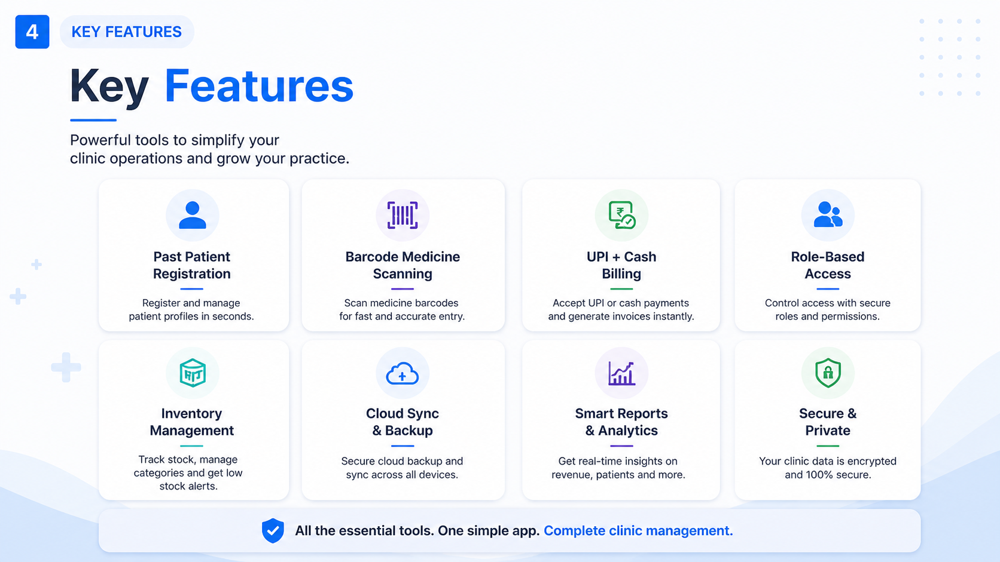
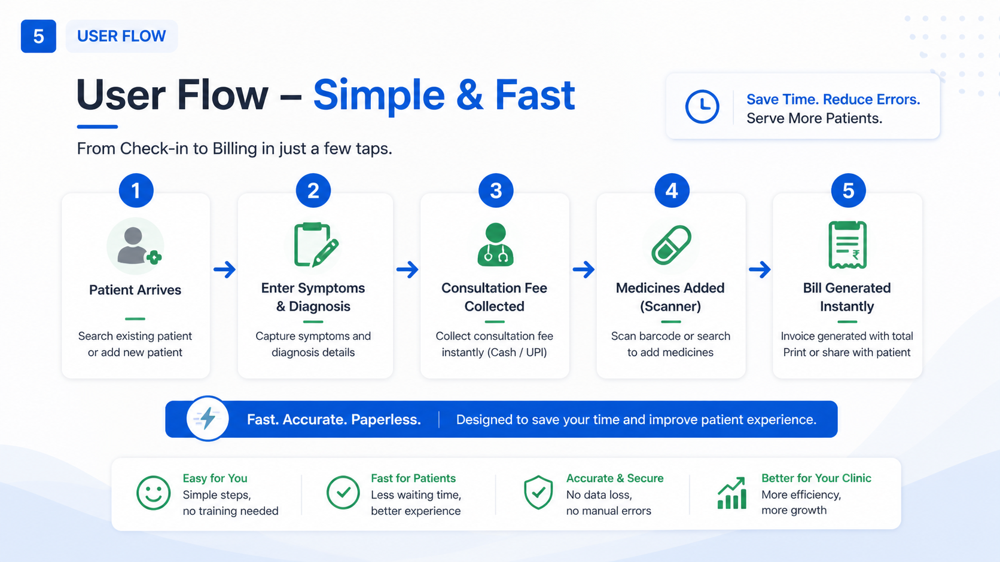

A robust, offline-first clinical workspace designed for seamless coordination between doctors, pharmacy, and management. Powered by real-time signaling and multi-device synchronization.
Instant notification system using SignalingManager. Alert doctors when patients are ready or call for management assistance with one tap.
Multi-tenant architecture allowing users to switch between clinics. Real-time Firebase sync ensures patient records and visit history are consistent across all devices.
Full local SQLite persistence combined with Firebase Disk Persistence. Data stays accessible even during network outages, syncing automatically in the background.
Handles live configuration sync, multi-user invitations, and real-time alerts.
Optimized QR generation (Pure Black/White) for distance scannability on CMOS sensors.
Master inventory sync from Admin to staff devices with integrated barcode support.
How Ramm streamlines clinical operations from reception to pharmacy.
Patients are registered with duplicate detection. Staff can instantly alert the doctor via the Signal System.
Doctors record symptoms and diagnosis. Billing is synchronized in real-time with the front desk.
Pharmacy receives prescriptions instantly. Billing generates secure UPI QR codes for revenue protection.
Visual guide and implementation reference screenshots.





Review more visual assets in the Presentation Folder.